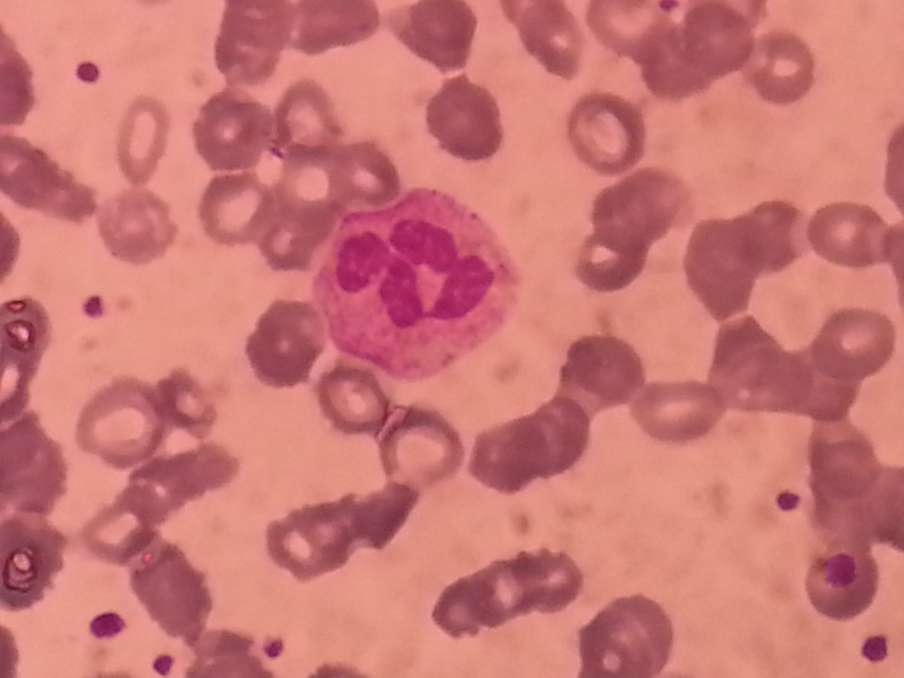
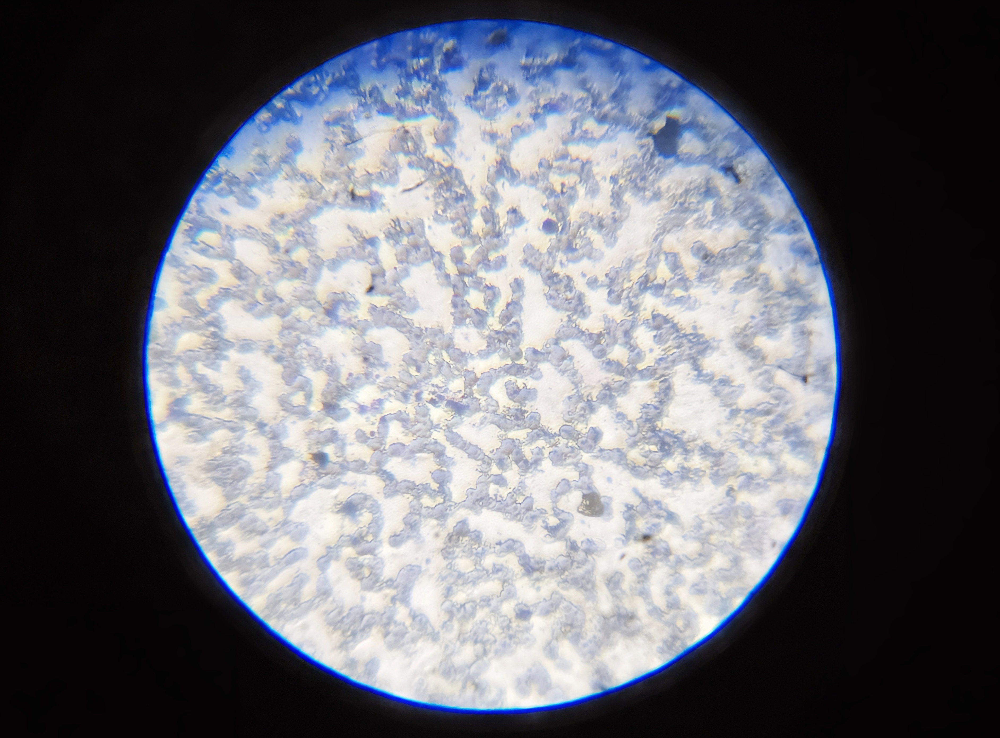
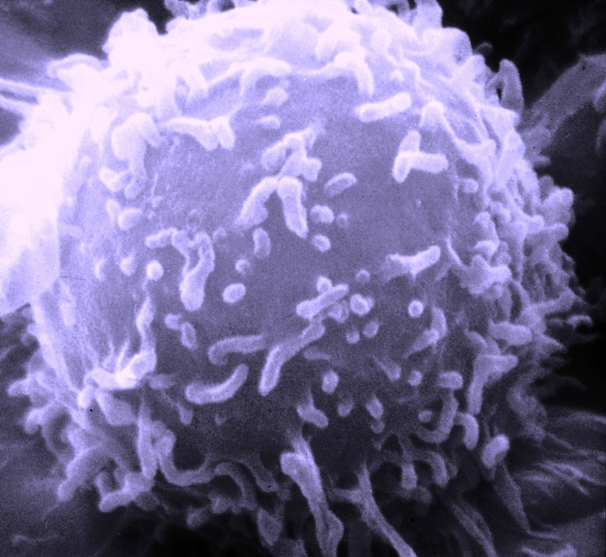
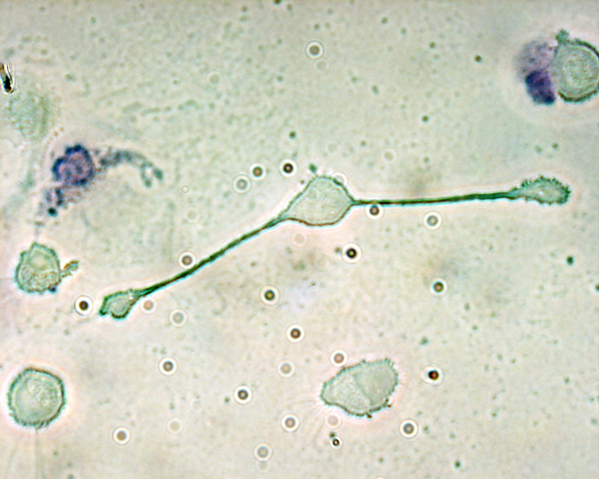
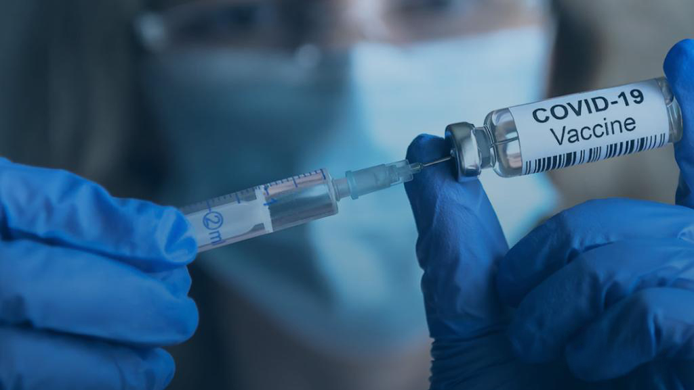

Immune System Photos
Microscopy and clinical images of immune cells, pathogens, and vaccines.

Neutrophil (WBC)
Wright-stained peripheral blood smear showing a neutrophil at centre, surrounded by erythrocytes and platelets.

Small Lymphocytes
Small lymphocytes in peripheral blood. B and T lymphocytes are the key adaptive immune cells.

Lymphocyte — SEM
Scanning electron microscope image of a lymphocyte, revealing surface microvilli and membrane detail.

Macrophage
Macrophages are large phagocytic cells that engulf pathogens, debris, and dead cells. First responders in innate immunity.

Vaccine Administration
Vaccines prime the adaptive immune system by introducing antigens without causing disease, generating immunological memory.

Influenza Virus
Colorized transmission electron microscope image of influenza virus particles. Hemagglutinin and neuraminidase spikes are visible on the surface.